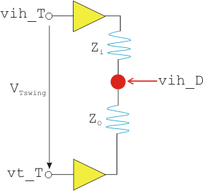
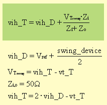

Level configuration for memory devices operating without ODT
To calculate the level configuration for a memory device without ODT you need to determine the input logic high value (vih_D) out of the specified memory device input swing.
1 2 EQNSET 5 "HSM3600" # without ODT 3 4 MODECONTEXT "HSM3600" 5 6 SPECS 7 Vddq [V] 8 swing_device [V] # applied around Vref 9 VDQo_offset [V] # manual threshold offset 10 11 EQUATIONS 12 Vref = 0.7*Vddq 13 vih_D = Vref + swing_device/2 # device high input level 14 vt_T = Vref + 3*(swing_device/2) 15 # Dual transmission line: -> voltage divider, 50-ohm environment 16 vih_T = 2*vih_D - vt_T 17 vil_T = vih_T - 2*swing_device 18 vol_D_max = 0.76 # GDDR3 spec 19 vth_T = vih_T/4 + vt_T/4 + vol_D_max/2 20 21 LEVELSET 1 "basic" 22 ... 23 24 # dual TL 25 PINS DQi 26 vih=vih_T 27 vil=vil_T 28 29 # dual TL 30 PINS DQo 31 term on 32 vt=vt_T 33 vth=vth_T + VDQo_offset 34
From a logical perspective this level configuration can be transferred into a voltage divider:

The value for vih_T can be determined by transforming the "voltage divider" formula (see following figure).

The variable names used in the above formula are described in the table below.
Variable Name |
Description |
|---|---|
vih_T |
Input high voltage on test system side |
vih_D |
Input high voltage at device side |
vt_T |
Termination voltage on test system side |
swing_device |
Expected voltage swing between logic high and logic low on device side |
VTswing |
Voltage swing on test system side |